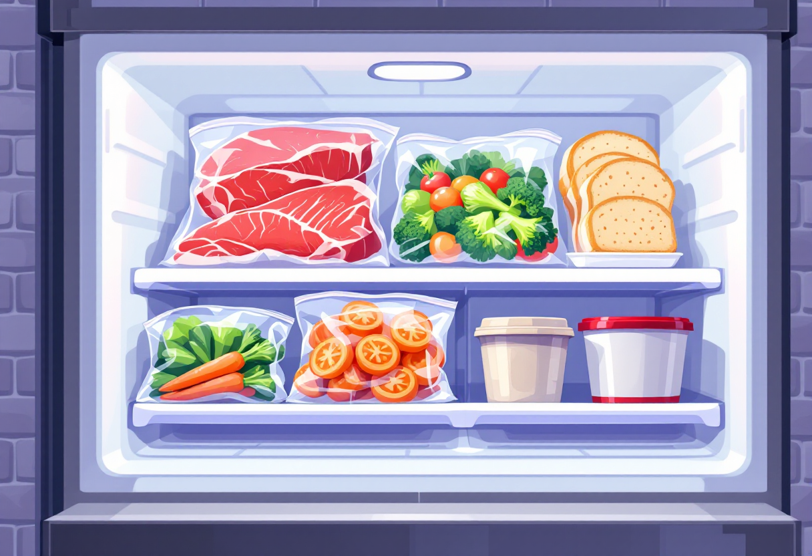

Базова кухня
Що варто вміти готувати кожному — мінімальний набір навичок для самостійного харчування.
5 базових технік, які варто засвоїти
Все готування зводиться до кількох фундаментальних технік. Освій їх — і зможеш приготувати майже будь-що.
- Варіння — крупи, яйця, овочі, м'ясо.
- Обсмажування — м'ясо, овочі, яйця на сковорідці.
- Тушкування — м'ясо або овочі в соусі під кришкою.
- Запікання — в духовці: курка, картопля, овочі.
- Нарізка — соломкою, кубиком, кільцями: впливає на час готування.
Як варити крупи і макарони
Здавалося б, просто — але є нюанси, від яких залежить результат.
- Рис: 1 частина рису + 2 частини води, варити на малому вогні під кришкою 15–18 хв.
- Гречка: 1:2, варити 15 хв після закипання, не заважати.
- Макарони: великий об'єм підсоленої води, варити за часом на упаковці, не переварювати.
- Після варіння — промивати лише гречку і рис (не макарони).

Як смажити м'ясо
Куряче філе чи яловичина — загальні правила схожі.
- Розігрій сковорідку перед тим, як класти м'ясо — це важливо.
- Не клади холодне м'ясо з холодильника одразу — дай постояти 10–15 хв.
- Курку: смаж по 4–6 хв з кожного боку на середньому вогні.
- Перевір готовність: сік при проколі має бути прозорим (не рожевим).
Спеції: як зробити їжу смачнішою
Спеції — це різниця між «їстівним» і «смачним». Ось мінімальний набір для старту.
- Сіль і перець — базова підсилювачі смаку для будь-якої страви.
- Паприка — солодкувата, дає колір і аромат.
- Часник — свіжий або сушений, підходить майже до всього.
- Куркума — жовтий колір, м'який смак, корисна.
- Соєвий соус — замінює сіль, додає глибину смаку.